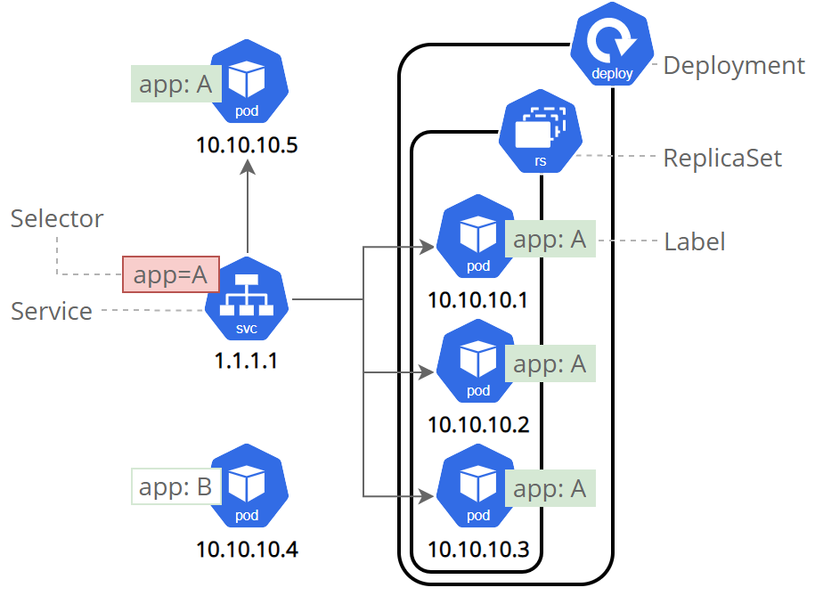

Objectives
- Learn about a Service in Kubernetes.
- Understand how labels and selectors relate to a Service.
- Expose an application outside a Kubernetes cluster.
Before you begin
The shell commands in this tutorial use POSIX shell syntax, which is
supported by the default shells on most Linux and macOS systems (for
example, bash, zsh, or sh). Windows users must use a POSIX-compatible
shell such as Windows
Subsystem for Linux (WSL) or Git Bash to run the commands as
written. Commands that use export, $(), and
similar constructs are not compatible with PowerShell
or the Windows Command Prompt.
Overview of Kubernetes Services
Kubernetes Pods are mortal. Pods have a lifecycle. When a worker node dies, the Pods running on the Node are also lost. A Replicaset might then dynamically drive the cluster back to the desired state via the creation of new Pods to keep your application running. As another example, consider an image-processing backend with 3 replicas. Those replicas are exchangeable; the front-end system should not care about backend replicas or even if a Pod is lost and recreated. That said, each Pod in a Kubernetes cluster has a unique IP address, even Pods on the same Node, so there needs to be a way of automatically reconciling changes among Pods so that your applications continue to function.
Note:
A Kubernetes Service is an abstraction layer which defines a logical set of Pods and enables external traffic exposure, load balancing and service discovery for those Pods.
A Service
in Kubernetes is an abstraction which defines a logical set of Pods and
a policy by which to access them. Services enable a loose coupling
between dependent Pods. A Service is defined using YAML or JSON, like
all Kubernetes object manifests. The set of Pods targeted by a Service
is usually determined by a label selector (see below for why
you might want a Service without including a selector in
the spec).
Although each Pod has a unique IP address, those IPs are not exposed
outside the cluster without a Service. Services allow your applications
to receive traffic. Services can be exposed in different ways by
specifying a type in the spec of the
Service:
ClusterIP (default) - Exposes the Service on an internal IP in the cluster. This type makes the Service only reachable from within the cluster.
NodePort - Exposes the Service on the same port of each selected Node in the cluster using NAT. Makes a Service accessible from outside the cluster using
NodeIP:NodePort. Superset of ClusterIP.LoadBalancer - Creates an external load balancer in the current cloud (if supported) and assigns a fixed, external IP to the Service. Superset of NodePort.
ExternalName - Maps the Service to the contents of the
externalNamefield (e.g.foo.bar.example.com), by returning aCNAMErecord with its value. No proxying of any kind is set up.
More information about the different types of Services can be found in the Using Source IP tutorial. Also see Connecting Applications with Services.
Additionally, note that there are some use cases with Services that
involve not defining a selector in the spec. A Service
created without selector will also not create the
corresponding Endpoints object. This allows users to manually map a
Service to specific endpoints. Another possibility why there may be no
selector is you are strictly using type: ExternalName.
Services and Labels
A Service routes traffic across a set of Pods. Services are the abstraction that allows pods to die and replicate in Kubernetes without impacting your application. Discovery and routing among dependent Pods (such as the frontend and backend components in an application) are handled by Kubernetes Services.
Services match a set of Pods using labels and selectors, a grouping primitive that allows logical operation on objects in Kubernetes. Labels are key/value pairs attached to objects and can be used in any number of ways:
- Designate objects for development, test, and production
- Embed version tags
- Classify an object using tags

Labels can be attached to objects at creation time or later on. They can be modified at any time. Let's expose our application now using a Service and apply some labels.
Step 1: Creating a new Service
Let’s verify that our application is running. We’ll use the
kubectl get command and look for existing Pods:
kubectl get podsIf no Pods are running then it means the objects from the previous tutorials were cleaned up. In this case, go back and recreate the deployment from the Using kubectl to create a Deployment tutorial. Please wait a couple of seconds and list the Pods again. You can continue once you see the one Pod running.
Next, let’s list the current Services from our cluster:
kubectl get servicesTo expose the deployment to external traffic, we'll use the kubectl expose command with the --type=NodePort option:
kubectl expose deployment/kubernetes-bootcamp --type="NodePort" --port 8080We have now a running Service called kubernetes-bootcamp. Here we see that the Service received a unique cluster-IP, an internal port and an external-IP (the IP of the Node).
To find out what port was opened externally (for the
type: NodePort Service) we’ll run the
describe service subcommand:
kubectl describe services/kubernetes-bootcampCreate an environment variable called NODE_PORT that has
the value of the Node port assigned:
export NODE_PORT="$(kubectl get services/kubernetes-bootcamp -o go-template='{{(index .spec.ports 0).nodePort}}')"
echo "NODE_PORT=$NODE_PORT"Now we can test that the app is exposed outside of the cluster using
curl, the IP address of the Node and the externally exposed
port:
curl http://"$(minikube ip):$NODE_PORT"Note
If you're running minikube with Docker Desktop as the container driver, a minikube tunnel is needed. This is because containers inside Docker Desktop are isolated from your host computer.
In a separate terminal window, execute:
minikube service kubernetes-bootcamp --urlThe output looks like this:
http://127.0.0.1:51082
! Because you are using a Docker driver on darwin, the terminal needs to be open to run it.Then use the given URL to access the app:
curl 127.0.0.1:51082And we get a response from the server. The Service is exposed.
Step 2: Using labels
The Deployment created automatically a label for our Pod. With the
describe deployment subcommand you can see the name (the
key) of that label:
kubectl describe deploymentLet’s use this label to query our list of Pods. We’ll use the
kubectl get pods command with -l as a
parameter, followed by the label values:
kubectl get pods -l app=kubernetes-bootcampYou can do the same to list the existing Services:
kubectl get services -l app=kubernetes-bootcampGet the name of the Pod and store it in the POD_NAME environment variable:
export POD_NAME="$(kubectl get pods -o go-template --template '{{range .items}}{{.metadata.name}}{{"\n"}}{{end}}')"
echo "Name of the Pod: $POD_NAME"To apply a new label we use the label subcommand followed by the object type, object name and the new label:
kubectl label pods "$POD_NAME" version=v1This will apply a new label to our Pod (we pinned the application
version to the Pod), and we can check it with the
describe pod command:
kubectl describe pods "$POD_NAME"We see here that the label is attached now to our Pod. And we can query now the list of pods using the new label:
kubectl get pods -l version=v1And we see the Pod.
Step 3: Deleting a service
To delete Services you can use the delete service
subcommand. Labels can be used also here:
kubectl delete service -l app=kubernetes-bootcampConfirm that the Service is gone:
kubectl get servicesThis confirms that our Service was removed. To confirm that route is
not exposed anymore you can curl the previously exposed IP
and port:
curl http://"$(minikube ip):$NODE_PORT"This proves that the application is not reachable anymore from
outside of the cluster. You can confirm that the app is still running
with a curl from inside the pod:
kubectl exec -ti $POD_NAME -- curl http://localhost:8080We see here that the application is up. This is because the Deployment is managing the application. To shut down the application, you would need to delete the Deployment as well.
What's next
- Tutorial Running Multiple Instances of Your App.
- Learn more about Service.